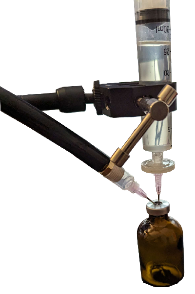

Sterilizing HRT
Do your vials have dust or hair in them? Did you core your vial and are now worried about sterility? Follow a questionable homebrew tutorial and are now worried about what can happen if you inject dust?
Worry not, as this guide aims to help you solve this problem while being somewhat cost conscious and not requiring a clean room or error-prone washing processes. You do not need to rinse vials or bottles in alcohol and worry about dust getting in during the rinsing process. The entire fluid path post filtration is pre-sterilized and disposable.
This procedure is not compatible with high viscosity oils unless you do the “vacuum syringe filtering” or “caulk gun filtering” procedure detailed at the end of the document. Don’t try to re-filter castor oil solution by hand unless it is water-like viscosity or you know it has a lot of benzyl benzoate in it.
Supplies
- Instant Pot Pro Plus
- Do NOT use a regular instant pot. It must be a 15 psi pressure cooker.
- If you have an Instant Pot Max (discontinued), that works too.
- If you can’t afford this, a stovetop pressure cooker which can reach 15 psi is also a good option. A regular Instant Pot can potentially work, but you would need to run the sterilization cycle for at least 2.5 hours instead of 1 hour.
- Instant Pot Mesh Steamer
- Optional. Nice for keeping vials higher up in the instant pot. You can use the canning rack however for vials you will need something else to support them. Don’t let them touch the bottom of the instant pot.
- 20mm Vial Crimper
- Still Air Box
- Recommended, especially if you have pets. Usually I would say these are mandatory, but in this case the only opportunity for dust to intrude is the brief period when you pull the stopper to insert the fill needle.
- 10mL Syringes
- Recommended for bubble point test.
- 30mL Syringes
- If you want to filter more than 30mL of vials, you can buy 60mL syringes instead. 60mL syringes also make it even less likely to break the filter due to lower achievable pressure, but filtering may be slower as a result.
- 60mL Syringes
- Vial Decapper
- Used to remove caps from pre-sterilized vials. Don't pierce the stoppers on pre-sterilized vials as it is unsafe to autoclave them after doing that.
- Vial Caps
- 18g Needles
- Pre-sterilized Vials
- If you want to filter more than 2-3 vials or don’t want to buy the still air box, also buy large vials (20-100mL) enough to fit all of the solution you intend to filter from the above link.
- Tip! Smaller vials are less likely to get contaminated or cored from multiple reuses. Since you are doing the work here, there’s no major reason not to use vials smaller than 10mL. You may have to draw from a 10mL vial over 78 times!
- Tip! Amber vs Clear vials: Clear vials are easier to inspect for particulates or discoloration of the vial contents. Amber vials protect their contents from light making it less likely to degrade, but you won’t be able to check for discoloration prior to drawing.
- Alternatives:
- Nylon Sterile 0.22 µm Syringe Filters
- Only use Nylon or PTFE syringe filters, other filter membranes are less compatible for our purposes and could dissolve into your medication. They must be individually packaged and sterile. Only use 0.22 µm or 0.2 µm filters, nothing larger or smaller.
- PVDF 33mm filter (Faster for castor oil without Benzyl Benzoate ONLY)
Avoiding Filter Breakage
Syringe filters can break if you apply too much pressure to them. An easy way to avoid this is to use a syringe which is large. I personally cannot apply more than 63 psi of force to a 30 mL syringe, meaning it is physically impossible for me to exceed the syringe filter’s 100 psi limit.
A way you can test if you can physically exceed the syringe filter’s rated pressure is to do the bubble point test procedure outlined later in this document, but do it with an extra syringe or a used one after filtering. Plug the end with your finger and press as hard as possible, and then do the conversion to determine how much pressure you can exert.
Procedure
If you have a still air box, set it up now and do all of these steps inside of it. Wear gloves and wipe them down with an alcohol swab.
Uncapping Sterile Vials
- Remove the plastic top from the pre-sterilized vials.
- Use the vial decapper to gently but firmly grip on the top of the vial seal. Go slowly and pull up gently rotating around the vial without fully removing the metal seal.
- Once the seal is uncrimped all around, use a pointed object, such as the cap for a needle, to push down on the stopper to prevent it being removed along with the seal. Pull up gently to remove the metal seal only.
- You may want to wipe metal dust off the top of the vial stopper if there is any after removing the seal ring.
Filtering
Filtering HRT takes about a minute per mL filtered! If you want to filter 3 vials, it means you will be pressing on a syringe plunger for about 30 minutes.
- Grab one of the 30mL or 60mL syringes and fit an 18g drawing needle onto it.
- Draw up the solution out of the beaker.
- Make sure to inject air into the vials while drawing to avoid pulling a vacuum. You want the entire vial to go into the syringe, so you may need to alternate between drawing and injecting more air.
- If there is any air left in your syringe, now is the time to push it out.
- Remove the 18g needle. Do not re-use this needle in the next part.
- Obtain another new 18g needle.
- Unwrap a syringe filter and place the needle on the output side (luer slip side) of the syringe filter.
- Install the syringe filter onto your syringe.
- You have two main options for filtering. If you are filtering more than 20mL of solution, want to take breaks, or don’t have a still air box, continue with this procedure. Otherwise, you can directly fill vials from the syringe filter by skipping to step 2 in the next section.
- Unwrap a third 18g needle and stick it into your intermediate filtering vial directly, not attached to any syringe. This vial is 20-100mL depending on how much solution you want to filter.
- Insert the syringe filter needle into the vial. Now
just push on the syringe.
- This can take a while, about 10 minutes per vial. If needed, you can take breaks. I suggest switching between hands while filtering.
- This may sound awful, and it is, but you only have to do it once every few years. If you want to mass produce vials, consider using vacuum filtration instead. You can also get some of the advantages by doing the “vacuum syringe filtering” tutorial at the end of this document.
- If you are filtering more than 25 mL of solution, you may need to switch out additional syringe filters. This mostly depends on if the flow rate decreases and your level of patience.
- Once you finish, set the syringe filter assembly aside and remove the extra needle stuck in the filtering vial.
Filling & Capping Vials
- Take a new syringe and 18g needle and draw up the solution from the filtering vial. You don’t need to use a large syringe here, you can use one of the smaller ones and refill it each time.
- Pull up the stopper just enough that you can fit
the needle around it into the vial. Press down on the stopper to
hold it against the needle and avoid dust getting in.
- Be careful not to scrape the side of the vial with the needle.
- Fill up the vial and pull the needle out, making sure to push the stopper back down. Set the vial aside and repeat for as many vials as you want to fill.
- Place an aluminum vial cap over the vial.
- Position the vial crimper over the vial evenly.
- Squeeze the vial crimper, first with one hand and then two hands.
- Repeat the steps to cap the rest of the vials.
Terminal Sterilization
- Fill the Instant Pot Pro Plus up with 2 cups of water.
- Place both mesh steaming baskets or the canning rack and something to support the vials into the Instant Pot Pro Plus. Do not let the vials touch the bottom of the instant pot.
- Place all of the vials into the top basket of the Instant Pot Pro Plus.
- Run the instant pot on the canning cycle for 1 hour, at max pressure, with no venting (natural cooldown), and no keep warm.
- It should reach a temperature of 250 °F. Allow the pot to cool naturally. If you vent it, it will put more temperature stress on the vials.
Bubble Point Testing
HRT Cat, the instructions this bubble point test procedure is based on, claims that bubble point values are readily available for MCT oil on the manufacturer website. I haven’t found these values reported for any of the filters I have used or researched and my own testing suggests the specific liquid used greatly influences the test results. If you want to do this test, you need to also do it on a fresh filter which has been flushed with MCT oil (or your carrier oil of choice) and compare. If you are using a solvent, make sure to include that in the test fluid.
Two tests for the filters I linked with MCT oil resulted in 65 psi and 59 psi. A test with Castor oil resulted in 196 psi. Note that if you test the filter multiple times, subsequent tests may not be valid as the filter may cease to be completely wet with the test fluid. I suggest using 10mL syringes. 5mL syringes are too small to be accurate and 30mL syringes you likely won’t be able to exert the required pressure unless you are very strong. The bubble point value reported for 0.22 micron Nylon filters for water is 40-46 psi. This document as well as my own experiments show the bubble point is highly dependent on the liquid being tested.
- Find what the barometric pressure in your area
is.
- If you are in the US, you can use weather.gov to get it.
- Convert the pressure value from inHg to PSI.
- You can use this online converter.
- To calculate it manually, multiply by 0.4911.
- If you are outside the US, your weather reporting may use different pressure units.
- Ensure there is an 18g needle on your syringe filter.
- Remove the syringe filter from the syringe you were using to filter from.
- Obtain a new or used 10mL syringe and fill it with air up to 10mL.
- Attach the syringe to the syringe filter.
- Fill a small glass or bowl with water.
- Dip the needle into the water and press on the syringe slowly.
- When a steady stream of bubbles is emitted from the syringe (not every few seconds, constant bubbles), record the value on the syringe.
- Use Boyle’s Law to calculate the pressure from the
compressed air.
- You can use this online calculator.
- Initial pressure: The pressure obtained from the weather forecast.
- Initial volume: 10mL
- Final volume: The volume recorded from step 9.
- To calculate manually:
- Multiply the initial pressure from the weather forecast by 10 mL.
- Divide that result by the volume recorded from step 9.
- You can use this online calculator.
- The resulting value from the conversion is known as
the bubble point.
- If this value is significantly lower (like around half) than the bubble point from either the filter specification or a fresh filter, it means your filter has been compromised and the solution you filtered is likely not sterile.
- If the value is similar to the expected bubble point, it means you didn’t break your filter and your solution has been correctly filtered.
- Note that this procedure is an estimate and is not extremely accurate.
Caulk Gun Filtering
This method is cheaper, easier, and 3x faster than vacuum syringe filtering, however it requires a degree of periodic monitoring of the caulk gun and if you are inattentive and make a mistake it is easy to rupture the syringe filter.
The basic idea is to have an air bubble in the syringe which you compress with the caulk gun. It is EXTREMELY important that you do not directly drive the fluid through the syringe withe the caulk gun, instead you are compressing an air bubble which drives the fluid through the syringe. You will periodically compress the syringe more as filtering progresses.
This approach filters oils at the following rates per my tests (all tests are with the 25mm nylon filters):
- MCT Oil
- With 10 -> 5 mL compression (116 psi bubble point)
- 45 mL in 44 mins (1.02 mL/min)
- With 20 -> 5 mL compression (73 psi bubble point)
- 22 mL in 9.9 mins (2.22 mL/min)
- With 10 -> 5 mL compression (116 psi bubble point)
- Castor Oil
- With 20 -> 5 mL compression (53 psi bubble point, flushed with 2mL MCT)
- 10 mL in 65 mins (0.153 mL/min)
- 15 mL in 104 mins (0.144 mL/min)
- 20 mL in 142 mins (0.141 mL/min)
- With 20 -> 5 mL compression (53 psi bubble point, flushed with 2mL MCT)
Supplies
- 60mL Syringes
- You can only use up to 45 mL of this syringe capacity.
- Don't use 30 mL (or smaller) syringes since they will slip through the caulk gun.
- Caulk Gun
- You can buy cheaper caulk guns, but I like how well this one works.
You'll also want some way to mount the caulk gun to be held up by itself if you are filtering castor oil, as it takes a while. Don't filter directly into final vials as interrupting the flow of solution from the caulk gun is annoying and will drip solution all over your workspace.
Procedure
- Fill up your syringe with the desired amount of solution. For a 60mL syringe, use up to 45mL.
- Select a compression ratio. Make sure the maximum PSI is less than the rating on your filter (which is typically 75-100 psi).
- 10mL -> 5mL (<= 32 psi, safest but slower)
- 15mL -> 5mL (<= 48 psi)
- 20mL -> 5mL (<= 64 psi, pay attention not to overcompress)
- Draw up the larger amount of air listed in the compression ratio.
- Attach the syringe filter to the syringe and attach the needle to the filter.
- Insert the needle into your sterile vial.
- Insert another needle (can be any smaller size) into the sterile vial to vent.
- Insert the syringe assembly into the caulk gun so that the syringe body is inside the caulk gun.
- Do NOT insert the body of the syringe filter into the caulk gun, it should be outside it.
- You may need to compress the syringe slightly to insert it into the caulk gun. If this is needed, ensure the syringe is upright while fitting it into the caulk gun and leave it upright from then on.
- Use the caulk gun to compress the syringe air bubble to the second number listed in the compression ratio.
- If you have a mounting solution, prop the caulk gun up, making sure it doesn't restrict your ability to operate it.
- Over time as filtration progresses, continue to re-compress the air bubble by operating the caulk gun. Be careful not to allow excessive compression, as that can burst the filter.
- Once you are done filtering, release the caulk gun pressure and remove the needles from the vial.
- Testing the bubble point of the syringe filter is highly recommended if you are using higher compression ratios or you feel you may have accidentally overcompressed the filter.
Vacuum Syringe Filtering
In my adventures to make syringe filtering not an awful hand-cramping experience and allow filtering of viscous oils, I have tested a vacuum syringe filtering method. Why do this?
- Bottle top filters which are compatible with benzyl benzoate and/or MCT oil are somewhat costly and hard to find.
- Many (but not all) bottle top filters have housings made of plastics which could possibly leech into your HRT due to incompatibility with solvents.
- No more cramping your hands, you can filter large amounts of oil without making yourself miserable.
- This approach maintains the advantages of syringe filters and pre-sterilized vials. You can keep everything post filtering factory-sterile and nothing ever needs to be washed which means saving time, effort, and makes the procedure significantly more dust resistant.
This approach filters oils at the following rates per my tests:
- MCT Oil
- 44.5 mL in 122 mins (0.37 mL/min)
- 8 mL in 9.75 mins (0.82 mL/min)
- Castor Oil
- Nylon 25mm filter
- 12 mL in 5.6 hrs (0.036 mL/min)
- 4.75 mL in 97 minutes (0.049 mL/min)
- PVDF 33mm filter
- 20 mL in 4.75 hrs (0.07 mL/min)
- Nylon 25mm filter
Supplies
- Vacuum Pump
- Note: This vacuum pump is excellent for bottle top filters should you choose to buy them in the future.
- Hose Fitting for Vacuum Pump
- Hose for Vacuum Pump
- Test Tube Stand
- One of either:
Pre Setup
Vacuum Filter
The vacuum filter comes with the incorrect size hose connection for our filters. You’ll need to wrench off the connection from the filter to the hose and replace it with the one that we purchased. Make sure to use thread tape (included) on the new connection and apply the hose clamp to the tube.
The existing hose connection that comes with the vacuum pump is extremely fragile. You will likely destroy the brass hose connection unless you use a box ended wrench. If you accidentally destroy or strip it like I did, you can wrench off the entire filter and connect the new hose connection directly to the vacuum pump. Of course, if you do this, do not use the pump to filter anything explosive.
To test the vacuum pump, put your finger against the hose and turn on the pump. If it can maintain suction for a few seconds, the pump is working. (Ideally test this before starting the process, as if the pump is not working finding out when you are about to filter solution would be very bad.
Hose to Luer Lock Adapter
Skip if you bought the finished adapter. The way this works is you cut one of the 5mL syringes so that it has about an inch of the tube left. Use thread tape, just thread the other hose adapter you bought for the vacuum pump into the syringe body. Note there is a chance you might crack the syringe when cutting it.
Procedure
Set up the syringe filter and hose as pictured and turn on the vacuum pump:

Try to keep the vial level on the desk and make sure the needles are only poked into the filtering vial just slightly. You don’t want the vacuum needle to reach down into the solution and send your filtered solution into the vacuum pump.